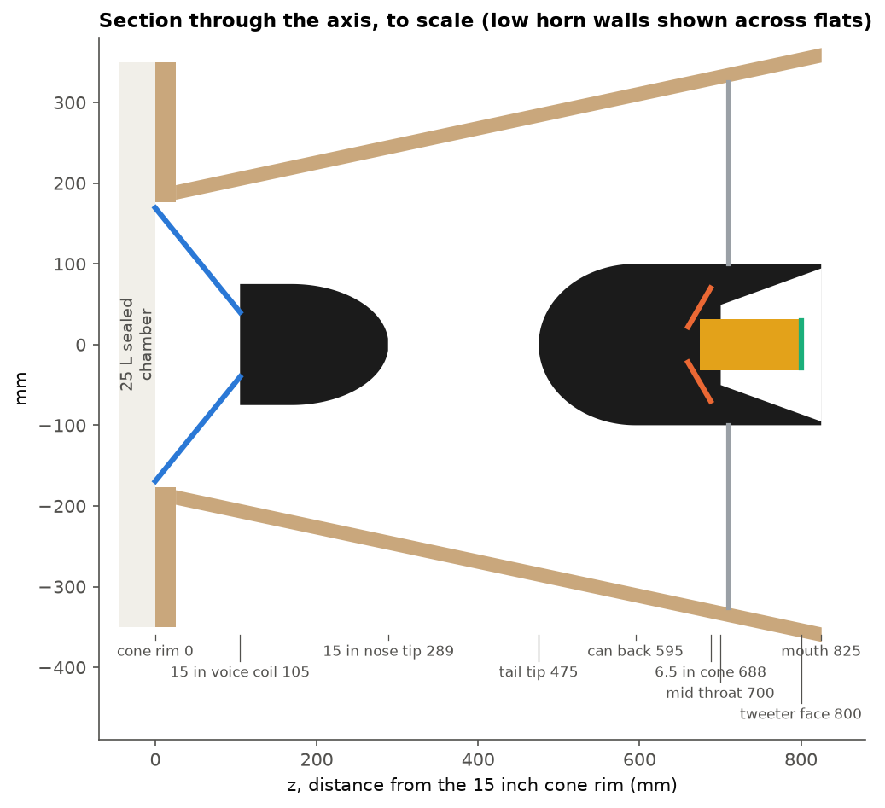
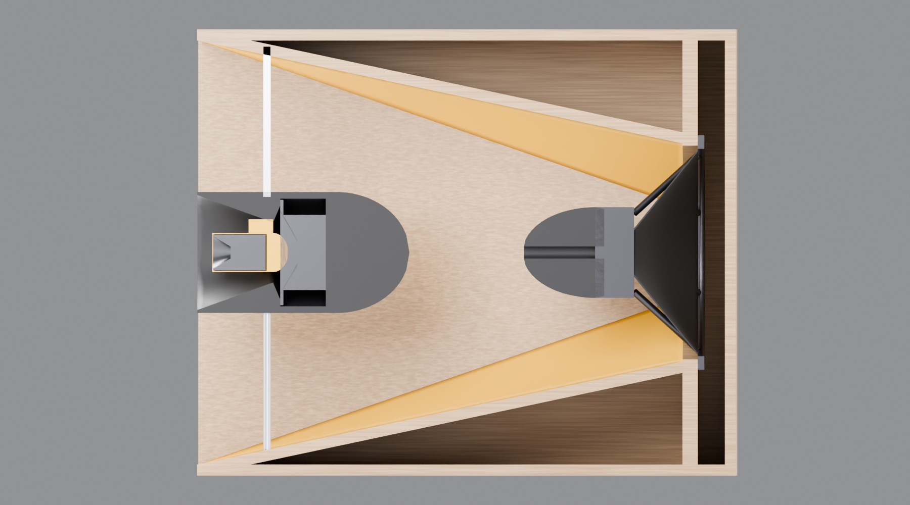
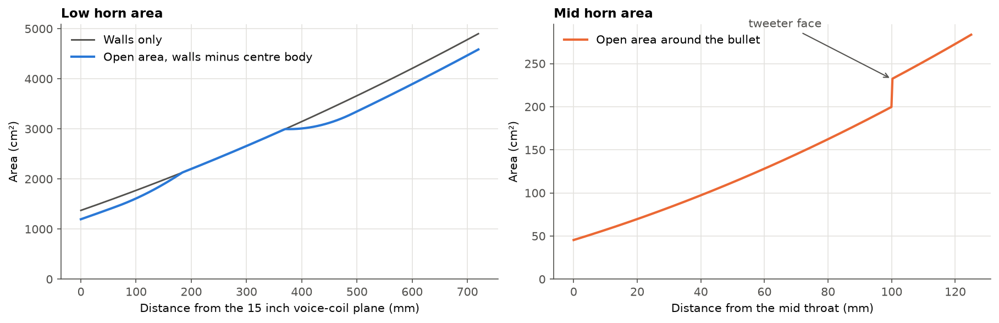
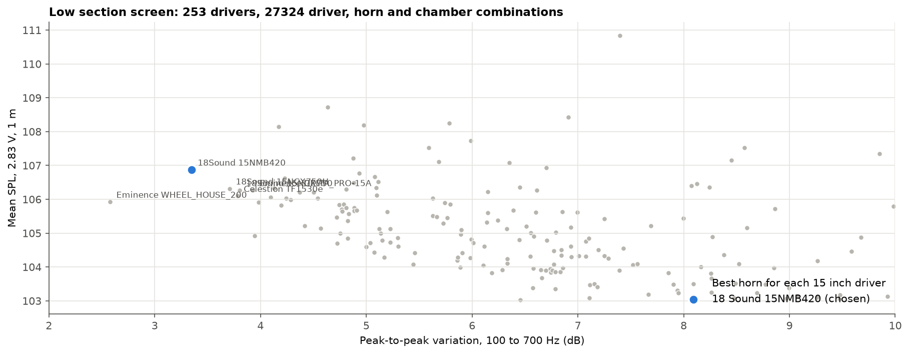

Design
Sunflower is three horns nested on one axis. Each section's phase plug, the solid body in the middle of its throat, is the next section. This page covers the layout, the area functions and how each driver was chosen.


Why nest the horns
A coaxial layout puts every acoustic source on one axis, so the sections stay aligned off axis as well as on it. The usual cost is that the inner horn blocks the outer one. In Sunflower the blockage is part of the outer horn: the low horn's area function is the space between its walls and the centre body, and the model includes the centre body from the start.
- Low section. The 15 inch is mounted backwards, from behind the baffle. Its convex cone and motor face the horn. The motor plus a printed elliptical nose is the first part of the centre body. The front of the cone works into a small sealed chamber at the back of the cabinet.
- Mid section. The mid can is the rest of the centre body. Its elliptical tail starts 475 mm from the cone rim, so the open area in the low horn narrows smoothly onto the can and then widens again to the mouth.
- Tweeter. The tweeter bullet is the mid horn's phase plug. The mid throat is the annulus between the 64 mm bullet and a 99.4 mm bore, 45.4 cm² open, 3.09:1 compression for the 6.5 inch cone. A cone-following lead-in keeps 1.5 mm clearance to the cone and gives a 25 cm³ front chamber.
Area functions

| Low horn | Value |
|---|---|
| Throat area at the voice-coil plane | 1196 cm² |
| Mouth open area (square minus can) | 4586 cm² |
| Front chamber, cone back to throat | 9.1 litres |
| Flare half-angle of the side panels | 12.0 degrees |
| Rear sealed chamber, net | 25.0 litres |
Choosing the 15 inch
The low section was screened over 253 15 inch drivers from the horn-simulation catalogue, 36 flat-panel horn sizes and three rear-chamber volumes: 27324 combinations, each a full plane-wave solve of the horn with its centre body. A row passed if its mean output from 100 to 700 Hz was at least 103 dB and its excursion at 100 W stayed inside Xmax. Passing rows were ranked by peak-to-peak variation.

| Driver | Throat / mouth / length (mm) | Rear (L) | Variation (dB) | Mean (dB) | x at 100 W / Xmax (mm) |
|---|---|---|---|---|---|
| Eminence WHEEL_HOUSE_200 | 360 / 750 / 850 | 30 | 2.58 | 105.9 | 2.1 / 2.2 |
| 18Sound 15NMB420 | 360 / 750 / 850 | 30 | 3.35 | 106.9 | 1.9 / 6.5 |
| 18Sound 15NCX750H | 360 / 750 / 850 | 30 | 3.71 | 106.3 | 2.0 / 5.5 |
| Celestion TF1530e | 360 / 750 / 850 | 30 | 3.78 | 106.1 | 2.0 / 6.5 |
| 18Sound 15NCX750 | 360 / 750 / 850 | 30 | 3.80 | 106.3 | 2.0 / 5.5 |
| Eminence DELTA_PRO-15A | 360 / 750 / 850 | 30 | 3.93 | 106.3 | 2.2 / 4.3 |
| Eminence LEGEND_CB158 | 360 / 680 / 850 | 30 | 3.94 | 104.9 | 2.1 / 4.8 |
| LaVoce WXF15.400 | 360 / 750 / 850 | 30 | 3.98 | 105.9 | 1.9 / 5.2 |
The 18 Sound 15NMB420 was chosen over the Eminence Wheel House 200 at the top of the list. The Eminence ripples less but has 2.2 mm of Xmax against 2.1 mm needed at 100 W. The 15NMB420 has 6.5 mm, a small neodymium motor that blocks less of the throat, and 450 W AES handling. Its Thiele/Small values were checked against the 18 Sound datasheet. A finer search with its own body dimensions chose a 360 mm throat, 700 mm mouth, 800 mm length and a 25 litre chamber: 3.0 dB variation, 106.6 dB mean. A 750 mm mouth measured 0.2 dB better and makes the cabinet 50 mm wider, so the smaller mouth was kept.
Mid and tweeter
The mid horn comes from an earlier study in horn-simulation: 480 annular horn geometries against 26 manufacturer-verified 6.5 inch drivers, 500 Hz to 6.5 kHz. The Beyma 6MCF200Nd with a conical horn had the least variation at over 100 dB. Its sealed back matters here: the driver sits in the airflow of the low horn and needs no rear chamber of its own. The port of that model into this repository reproduces the study's result within 0.12 dB in band, which is a test.
The Fostex T90A is a horn super tweeter: 106 dB/W/m, 5 to 35 kHz, with a 60 mm aluminium horn that fits a 64 mm bullet. Fostex recommends a crossover at 7 kHz or above, which sets the upper crossover.
Dimensions
| Station | z from the 15 inch cone rim (mm) |
|---|---|
| baffle back | 0 |
| baffle front | 25 |
| mid tail tip | 475 |
| mid can back | 595 |
| mid driver back | 613 |
| mid cone rim | 688 |
| mid throat | 700 |
| tweeter face | 800 |
| mouth | 825 |
| support rods | 710 |